library(tidyverse)
fish <- read_csv("data/fish_sick_data.csv")2.4: Exploring geom Functions
Plotting in ggplot2
Learning Outcomes
- Students will be able to build histograms, multiple histograms, scatter plots, and box plots using
ggplot2. - Students will be able to select an appropriate plot type based on the number and type of variables.
- Students will be able to layer multiple
geomfunctions in a single plot. - Students will be able to use
aes()arguments correctly to map variables to visual properties such as color and fill. - Students will be able to add labels and a theme to a
ggplot2plot.
Data Visualization Types and When to Use Them
Let’s practice making different kinds of plots with various geom functions to see how they work.
Plotting in ggplot2
First, let’s remind ourselves of the general structure of how we make plots using the ggplot2 syntax.
# ggplot(data = your_data, aes(x = x_variable, y = y_variable)) +
# geom_type() +
# labs() +
# theme()Histograms
As we covered in the previous lesson, histograms are plots that let us look at one numeric variable.
They help us get a feel for the distribution of that data. To make histograms in ggplot2, we use the geom_histogram() function. Let’s look at the number of fish.
ggplot(fish, aes(x = num_fish)) +
geom_histogram(bins = 20)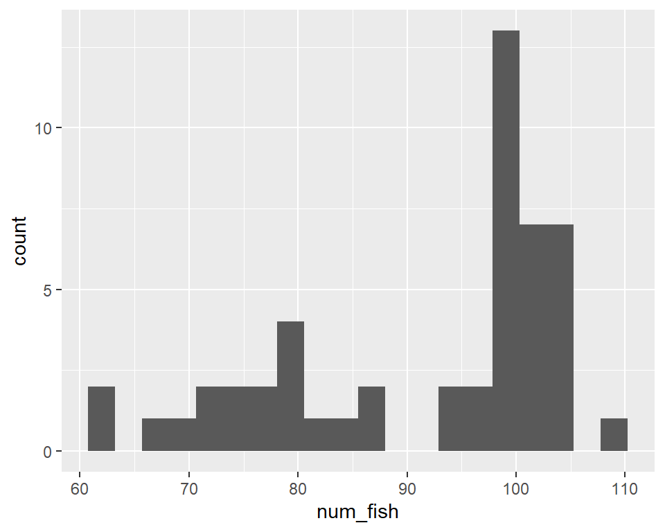
# we can change the number of bins (essentially the number of columns) by modifying the bins argument in the geom_histogram() function.
ggplot(fish, aes(x = num_fish)) +
geom_histogram(bins = 10)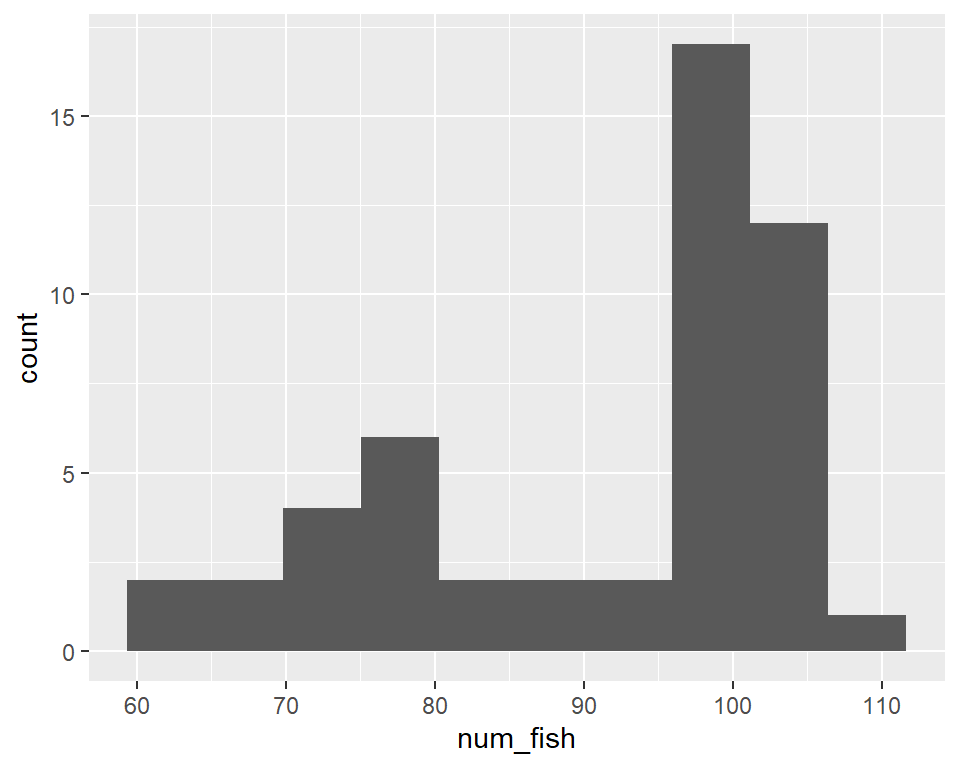
# we can also modify the colors!
ggplot(fish, aes(x = num_fish)) +
geom_histogram(bins = 20, fill = "lightblue", color = "black")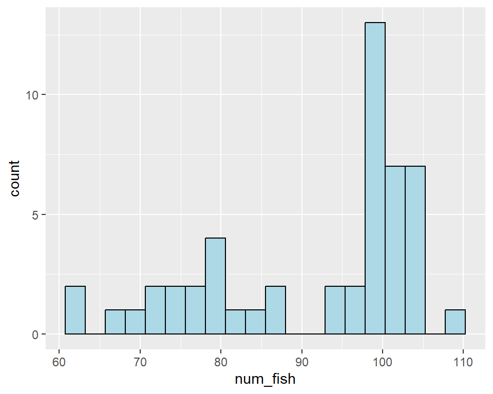
Let’s Practice
Make a histogram of the number of sick fish in the tanks. Create the histogram with 10 bins (10 groupings).
# Write your code hereAnswer:
ggplot(fish, aes(x = num_sick)) +
geom_histogram(bins = 10)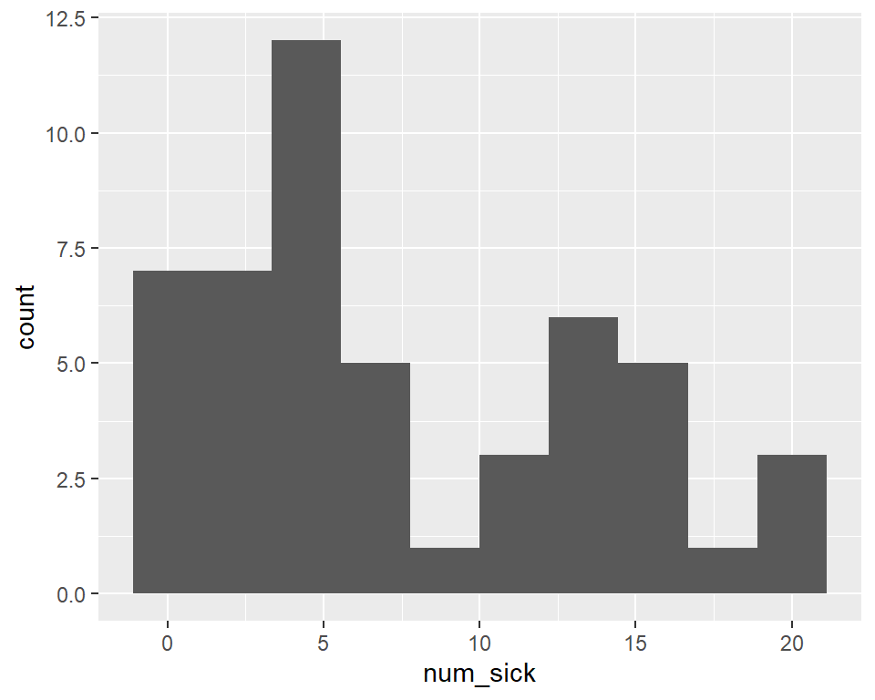
Multiple Histograms (with geom_histogram())
When we create a multiple histogram, we have to add one additional argument to geom_histogram(). Let’s see what happens if we just specify fill.
ggplot(fish, aes(x = num_fish, fill = species)) +
geom_histogram(bins = 10)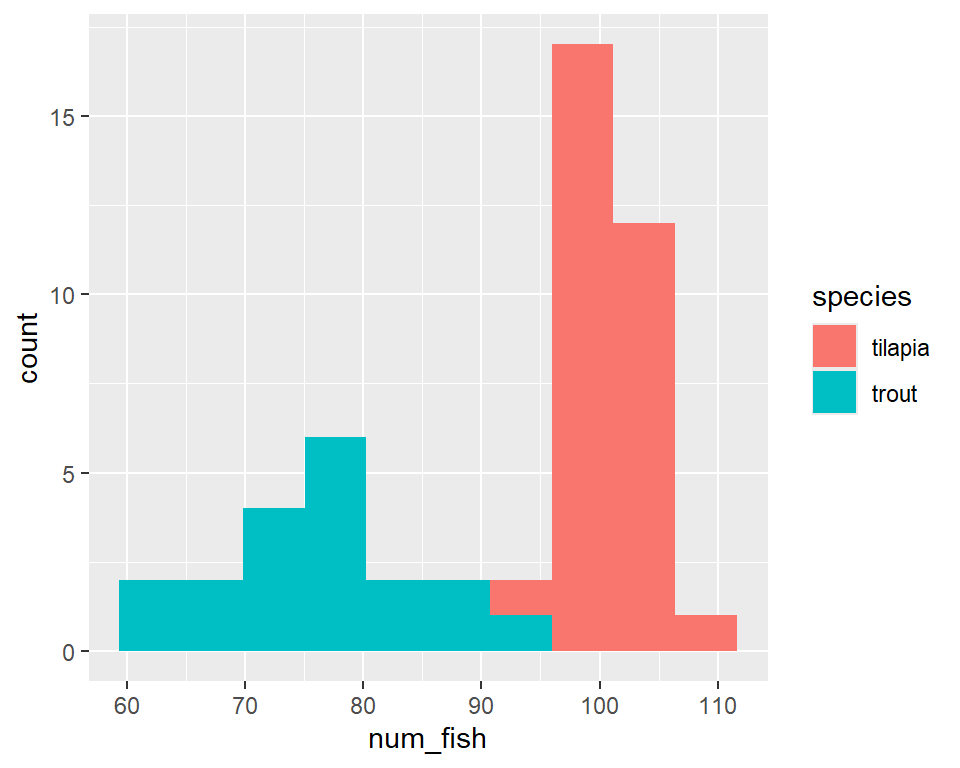
What is happening in the column with both green and red? Perhaps the teal histogram is in front of the red histogram and is blocking us from seeing some red?
Let’s change the transparency using an argument called alpha, which allows us to make layers transparent. The scale for alpha goes from 0 (completely transparent) to 1 (not transparent at all).
We can set the transparency to 0.5 to see if there is any overlap.
ggplot(fish, aes(x = num_fish, fill = species)) +
geom_histogram(bins = 10, alpha = 0.5)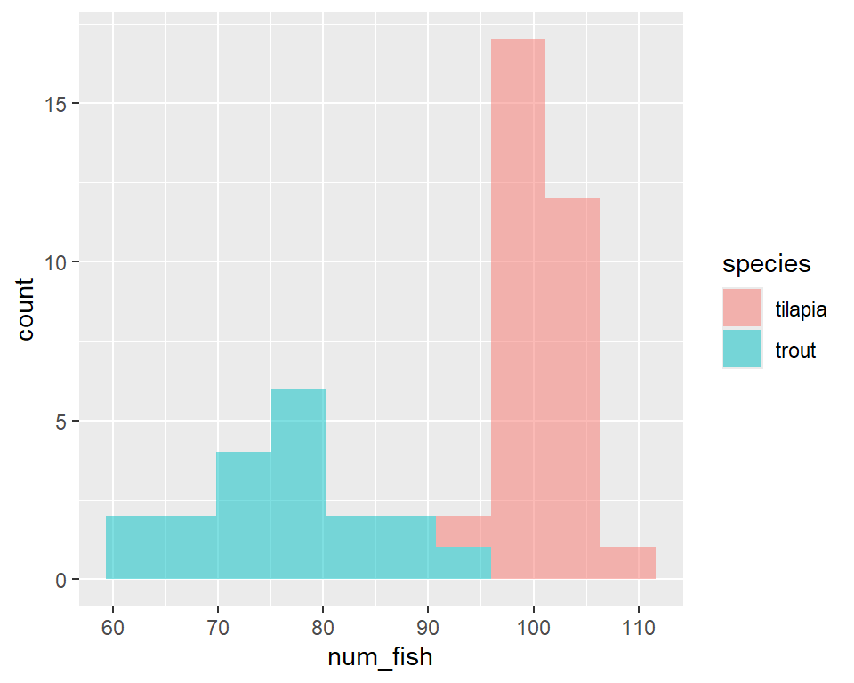
Not too much changed. It still doesn’t look like we can see any red points behind the teal. Perhaps the teal values and red values are stacked on top of one another?
Let’s take a look at what happens when we add the argument position = "identity".
ggplot(fish, aes(x = num_fish, fill = species)) +
geom_histogram(bins = 10, alpha = 0.5, position = "identity")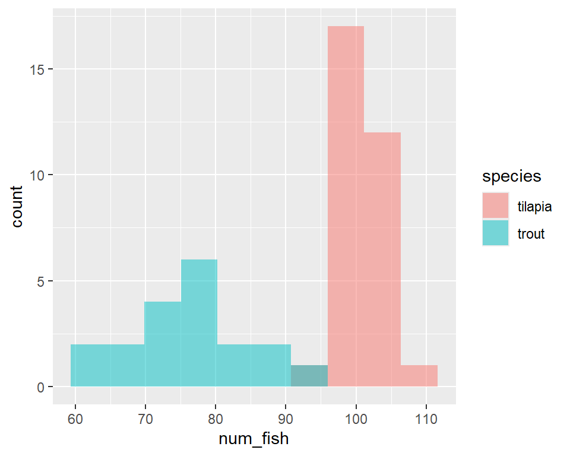
Aha! This is different from above. Instead of red being stacked vertically on top of teal, we can now see that the red values start at 0 on the y-axis and are overlapping with the teal.
The position = "identity" argument tells geom_histogram() to plot the data for each group starting from 0 in the y-axis rather than stacking values from the same group, which is the default.
Any time we create a multiple histogram, we need to add transparency and position = "identity"; if we don’t, we risk missing overlap between groups!
Let’s Practice!
Make a multiple histogram of the number of sick fish per species. Make sure your plot has 10 bins, is partially transparent, and the data are not stacked.
# Write your code hereAnswer:
ggplot(fish, aes(x = num_sick, fill = species)) +
geom_histogram(bins = 10, alpha = 0.5, position = "identity")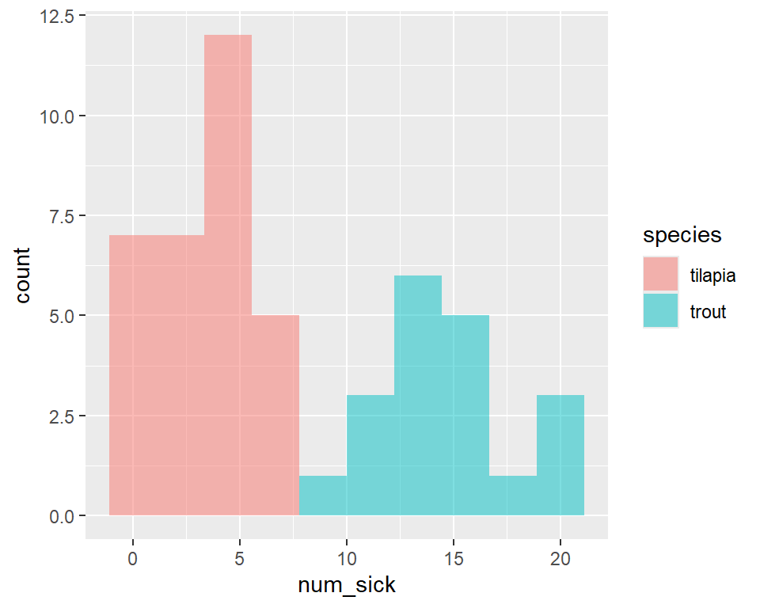
The powerful and pesky aes() function
A quick note about the aes() function. It’s one of the more confusing bits of ggplot2.
When should you put color (or size, linetype, fill, etc.) inside the aes() function versus in the geom function outside of aes()? Looking back at the multiple histogram plots, why did fill go inside aes() but alpha went outside?
Essentially, it boils down to this:
if you want something (color, size, etc.) on your plot to change based on a variable from a data frame, you will want to put the argument within the
aes()function.if you want something (color, size, etc.) on the plot to be constant, you will specify it outside of the function.
For some additional examples and explanation, check out this Stack Overflow page.
Scatter Plot
As a reminder, we use the geom_point() function to make a scatter plot of the relationship between two numeric variables.
ggplot(fish, aes(avg_daily_temp, num_fish)) +
geom_point()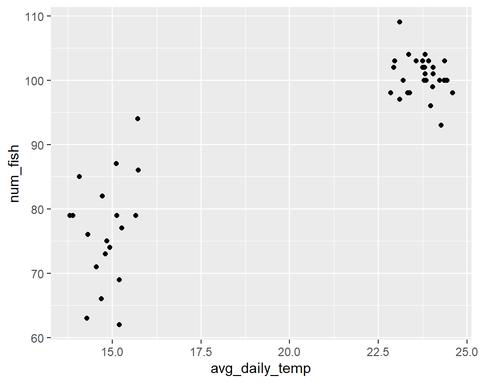
Let’s Practice: Multiple Scatterplot
Using what you’ve learned about making histograms, see if you can create a “multiple scatterplot,” where the color of the points are determined by the fish species.
Hint: you’ll want to use an argument called color.
# Write your code hereAnswer:
ggplot(fish, aes(avg_daily_temp, num_fish, color = species)) +
geom_point()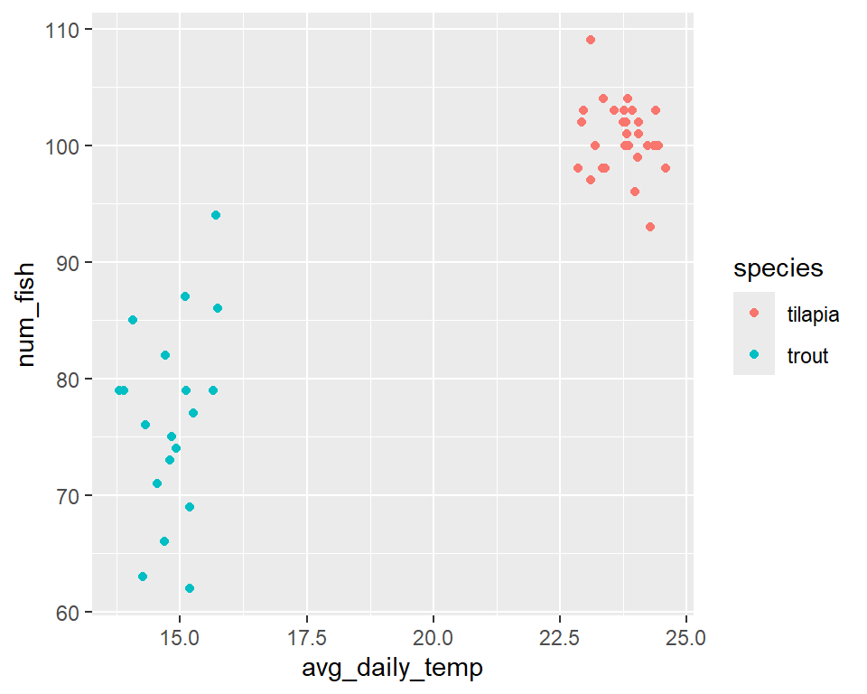
Box-and-Whisker Plots
Box-and whisker-plots (also known as box plots) are another great option for looking at one numeric variable and one or more categorical variables. They are particularly nice when you want to see measures of central tendency and variation in the same plot.
Let’s build one and then talk through what each component means. We use geom_boxplot() to make these types of plots.
ggplot(fish, aes(species, num_fish, color = species)) +
geom_boxplot() 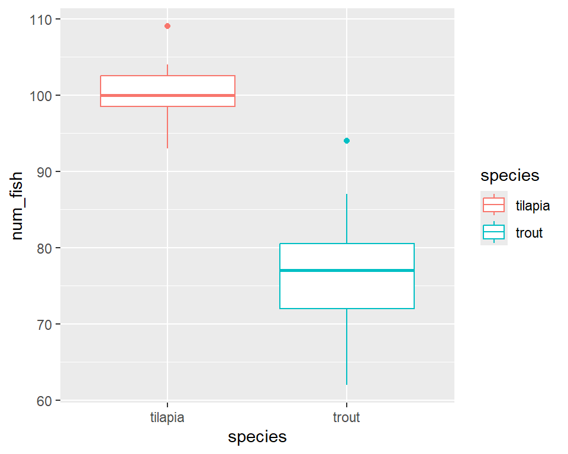
So what does the box represent? And the whiskers?
- the box represents the middle 50% of the values in the data set.
- the line that runs through the middle of the box represents the median (middle value) of the data
- the whiskers extend from each edge of the box out to the farthest data point that still falls within 1.5 times the box height (the interquartile range), giving a sense of the overall spread of the data
- values that fall outside of the whiskers can be considered outliers and are plotted individually
Layering
One of the beautiful parts of working with ggplot2 is that you can add multiple layers to each plot.
One of the key things missing from box-and-whisker plots is any indication of how many data points we have. In the plot above, there could be 5 tanks per species or 500 tanks per species.
How can we add an indication of how many points there are? We can layer each individual data point on top of the boxes!
ggplot(fish, aes(species, num_fish, color = species)) +
geom_boxplot() +
geom_point(alpha = 0.5)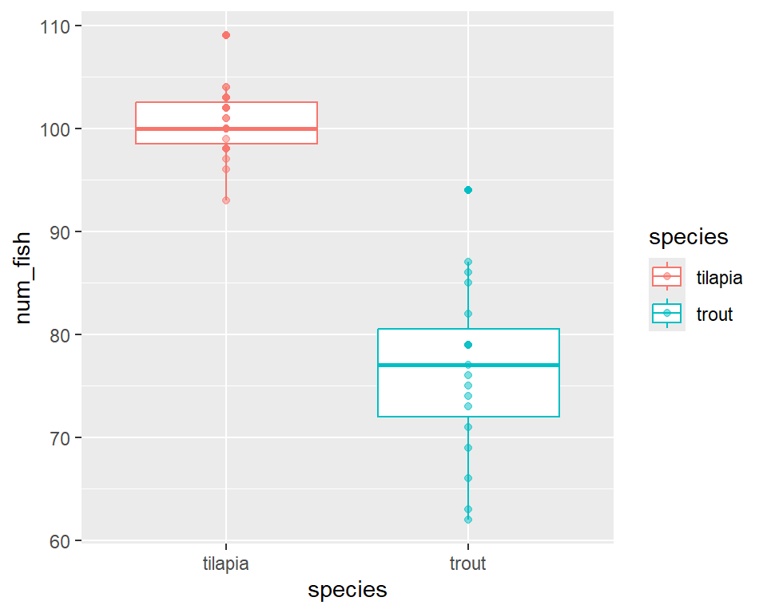
This is nice, but there is still some overlap in points that makes it hard to see exactly how many points there are.
The geom_jitter() function is a special version of geom_point(). It adds a little bit of randomness to the points (both horizontally and vertically) so that they don’t overlap as much.
We can control how much randomness we allow with the width and/or height arguments. A good starting point is to leave height at its default and set width to 0.1.
ggplot(fish, aes(species, num_fish, color = species)) +
geom_boxplot() +
geom_jitter(alpha = 0.5, width = 0.1) 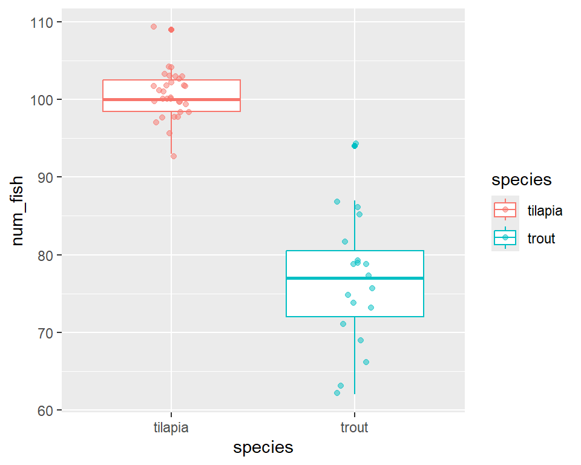
That is looking really nice! We can keep improving it, though, with better labels for the axes and the legend as well as a nice theme.
ggplot(fish, aes(species, num_fish, color = species)) +
geom_boxplot() +
geom_jitter(alpha = 0.5, width = 0.1) +
labs(x = "Species",
y = "Number of Fish Per Tank",
color = "Species") +
theme_light()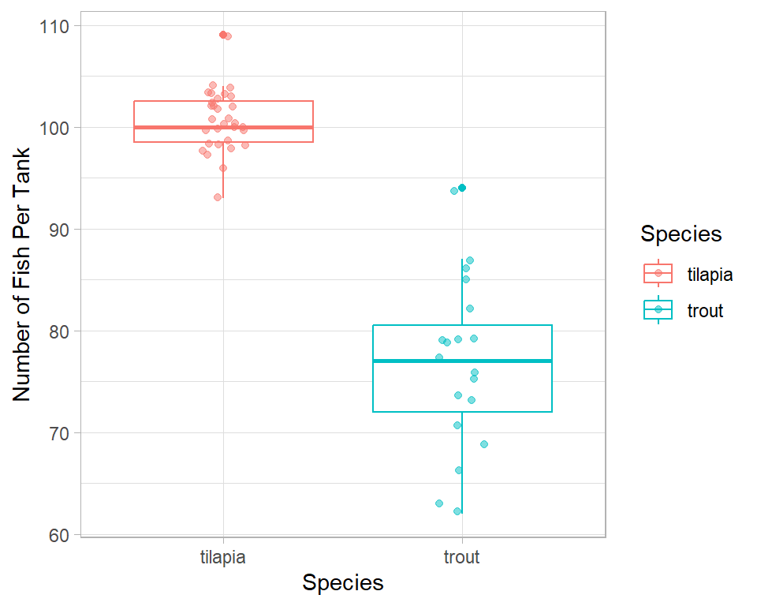
color and fill
We have used two different arguments in the aes() function to specify that we want the colors in our plots to change based on one of the columns in our dataset.
color
For the most part, the color argument refers to the color of the lines in a plot (e.g., in box plots, the colors of the lines change).
The one exception is geom_point(), where color controls the color of the points themselves.
fill
When there is space that we want to fill in with color depending on the values in a column, we want to use the fill argument.
For histograms, the fill argument changes the color inside the bins. If we use color in a histogram instead, only the outlines of the columns will change, but the columns will remain filled with gray.
In boxplots, the inside area of the box will be filled with color, but the lines will stay black.
In Labels
If we have specified either color or fill (or both) in the aes() function, ggplot will automatically create a legend for us. The key is determined by whichever argument we used.
So, if you use the color argument in the aes() function, you would want to use the color argument in the labs() function to change the title of the legend. If you used the fill argument, you would then use the fill argument in the labs() function.
If you have both color and fill in aes(), you will need to add both arguments to the labs() function. If you give the same label to each, it will create one key.
Let’s Practice!
Make 2 different types of plots with the same data: the average daily temperature of the tanks and fish species.
First, think about the variables we are plotting. How many are there? Are they categorical or numeric?
Based on those answers, determine which plot types you can produce for those variable types.
Now, make your two plots! To each, add labels and a theme.
# Write your code hereAnswer:
# boxplot
ggplot(fish, aes(species, avg_daily_temp, color = species)) +
geom_boxplot() +
geom_jitter(alpha = 0.5, width = 0.1) +
labs(x = "Species",
y = "Average Daily Temperature (°C)",
color = "Fish Species") +
theme_bw()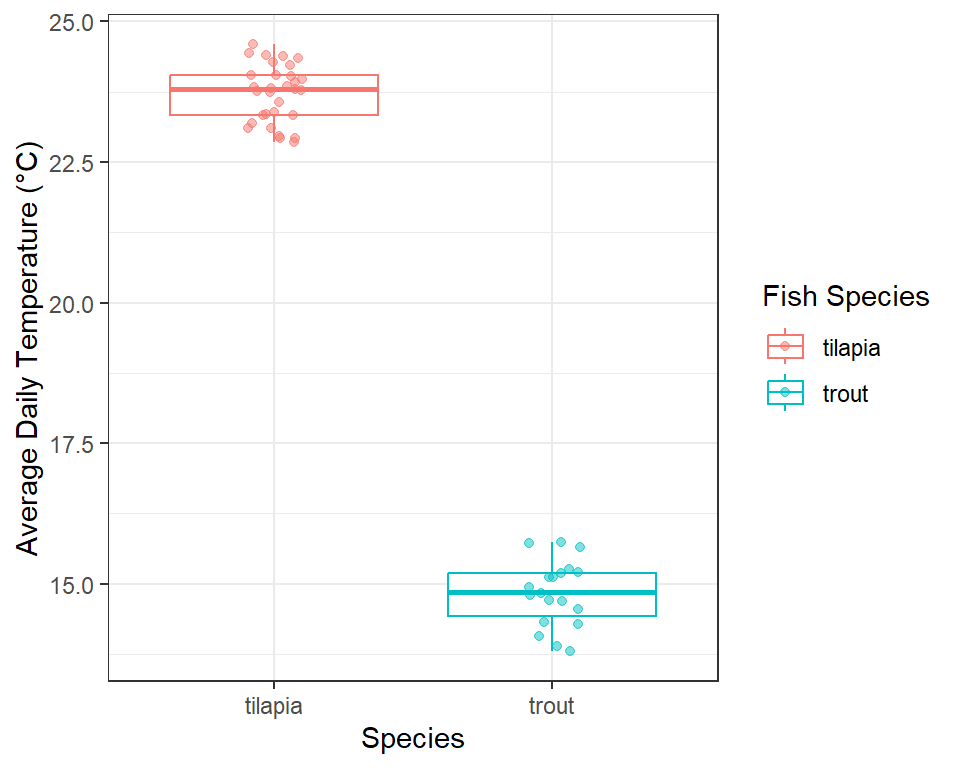
# histogram
ggplot(fish, aes(avg_daily_temp, fill = species)) +
geom_histogram(bins = 10, alpha = 0.5, position = "identity") +
labs(x = "Average Daily Temperature (°C)",
y = "Frequency",
fill = "Fish Species") +
theme_bw()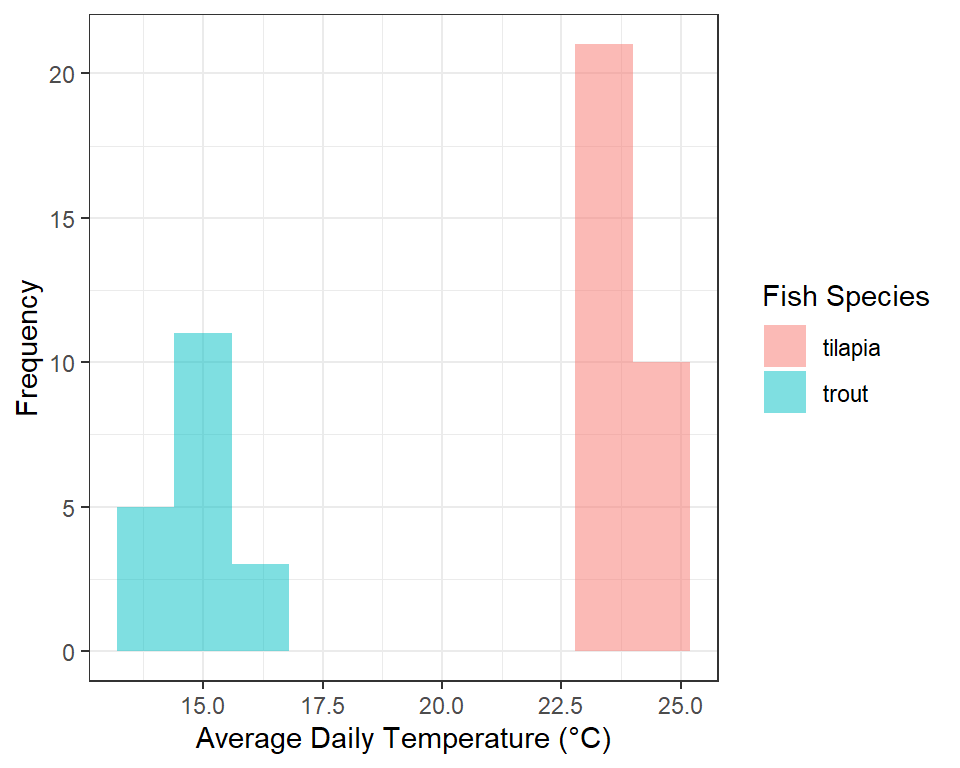
Instructor Note: Categorical variable (species) goes on the x-axis and the numeric variable goes on the y-axis.
Finished? Let’s add another variable. Now, we want to plot average daily temperatures, the number of sick fish, and the fish species. Work through the same steps as above.
How many variables are there, what types are they, and which plot type makes sense?
# Write your code hereAnswer:
ggplot(fish, aes(avg_daily_temp, num_sick, color = species)) +
geom_point(alpha = 0.5) +
labs(x = "Average Daily Temperature (°C)",
y = "Number of Sick Fish per Tank",
color = "Fish Species") +
theme_light()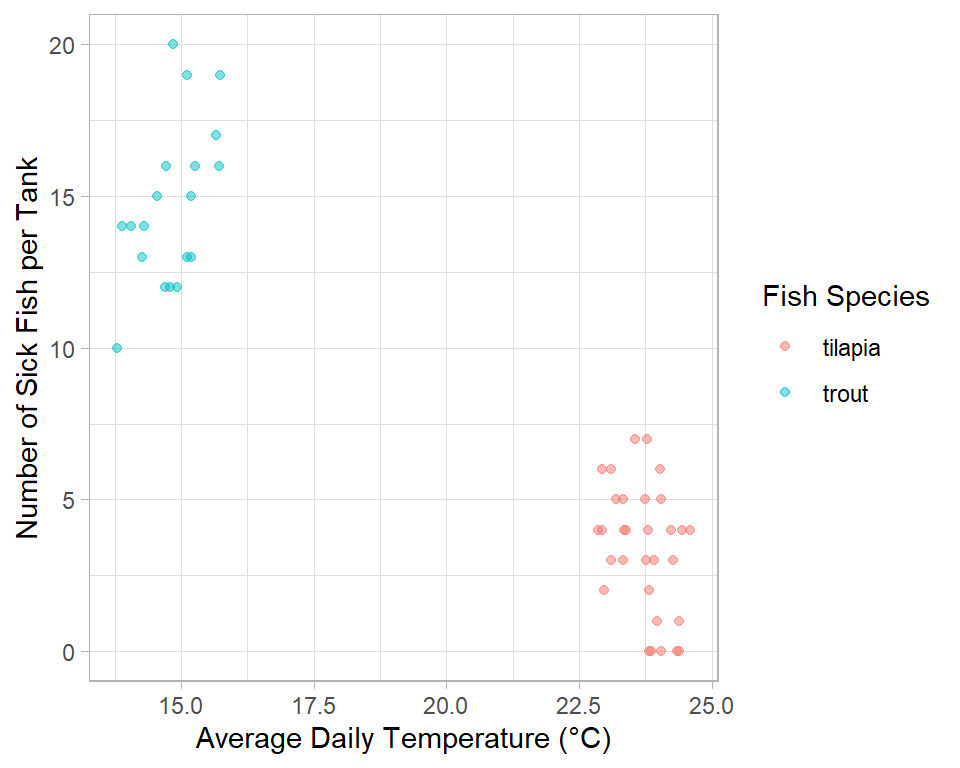
Instructor Note: Three variables: two numeric (avg_daily_temp, num_sick) and one categorical (species). A scatter plot is the right choice, two numeric variables on the axes, categorical variable mapped to color.
Summary
Let’s summarize some of what we’ve learned in this lesson
Data Visualization Types and When to Use Them
Histogram
Good for looking at the distribution of one numeric variable
- one numeric variable (x-axis)
Multiple Histogram
Good for looking at differences in the distributions of one numeric variable based on a categorical variable
- one numeric variable (x-axis)
- one categorical variable via the
fillorcolorargument in theaes()function - we always want to add transparency (
alpha) and, for histograms,position = "identity"
Scatter Plot
Good for looking for the relationship between two numeric variables
- two numeric variables (x-axis and y-axis)
- can add in a categorical variable via
aes(), but the main relationship is between the two numeric variables
Box Plot
Good for looking at measures of central tendency and variation for a numeric variable and the differences between those measures between categories
- one numeric variable (y-axis)
- at least one categorical (x-axis and additional via
aes())
Layering
We can add multiple layers to ggplots, which is part of what makes them so useful!
- we can add multiple
geomfunctions to a single plot - we use the
labs()function to rename axes labels and legends - we use a
themefunction to make the plot more aesthetically pleasing and easier to understand